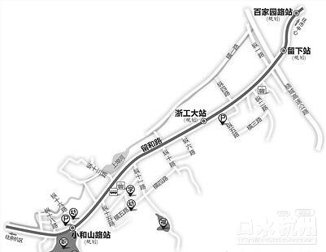

小和山区块预留了地铁3号线支线的走向，规划设4个站点，分别在百家园路、留下、浙江工业大学、小和山附近。
杭州市规划局昨天在门户网上公示小和山单元控制性详规（草案)，规划图中，不仅标了地铁3号线支线的走向，还将增设多所学校和农贸市场等公共配套设施。
高教园小和山新定位为全方位教育园
印象中的小和山，是高教园；未来，它是教育园。
名字改了一个，功能却提升很多。
目前，小和山有浙江工业大学屏峰校区、浙江科技学院、浙江外国语学院、浙江长征职业技术学院、工商银行杭州金融研修学院，以及省特殊教育职业学院，华强中等职业学校等。
“但整个小和山还是有种冷清感，这个因为除了学校和居住区外，整个区域内缺乏别的功能元素，活力度不够。”杭州规划设计院的专家说，这次规划调整，首先对一些高校尚未开发的土地进行调整，适度开发两边山谷缓坡用地。
比如，将在小和山区域内增加大学生创业园区、孵化器、办公楼、高校老师研发试验区域。还要增加培训、特殊、留学等教育资源，“就像打造一个杭州的硅谷，让小和山更加充满活力，不再是单一的高教园区，而是一个拥有完善教育体系的教育园地。”
打造“鱼骨头”支路网
小和山整个区域内的住宅、学校都分布在主干道留和路两侧，这次规划中，留和路并没有大变动，基本保持现状，主要对支小路进行了优化，主要支路宽度12米至24米，次要支路宽度16米以下，路网的最后样子像是一个“鱼骨头”。
特别是纵一路、横一路（暂定名），不仅担负着区域内道路交通联系，还要成为出入市中心的备用通道。
地铁3号线要来了吗？
地铁3号线支线(小和山站—百家园路站)属于杭州地铁轨道三期规划，目前还在最终审批过程中。
但考虑到小和山规划周期较长，以及对于轨道交通的预判性，此次规划中决定在留和路上预留轨道交通线位，并设4个站点。
据杭州地铁集团相关负责人表示，现在部分地方正在对轨道交通三期的规划线路地段进行先期勘测，但具体线路走向还是要等国家发改委批复下来才能确定。
预计批复最快本月底有结果。
除了站点外，还规划了1个地铁兼容停车场用地，也叫做车辆段。这里不仅是地铁车厢停靠的地方，更是地铁的“休息室”和“医院”，目前杭州地铁1号线七堡站就拥有一个这样的车辆段。由于车辆段对地块要求比较大，还可以加盖上盖物业，因此选择了浙江科技学院对面，在浙江工业大学站和小和山路站之间的空地。
建一所36班的九年一贯制学校
居住在小和山的人，只占了区域总人口的1/5左右，大部分是师生。一直以来，这里的生活配套比较弱，这次规划中一一补上。
学校：拟建一所省盲人学校；增加36班九年一贯制学校1所，拟建立在地铁车辆段南侧；建幼儿园2所共18班，分别位于浙江外国语学院和浙江长征职业技术学院旁。
农贸市场：规划在浙江工业大学南侧增加文化活动中心和农贸市场，在地铁车辆段地块增加农贸市场一个。
另外，还计划结合现有自然资源，在山麓地区增加透山通廊，将山景引进来；在上埠河水面开阔处结合小岛设置1处滨水公园，供大家休息游玩。
